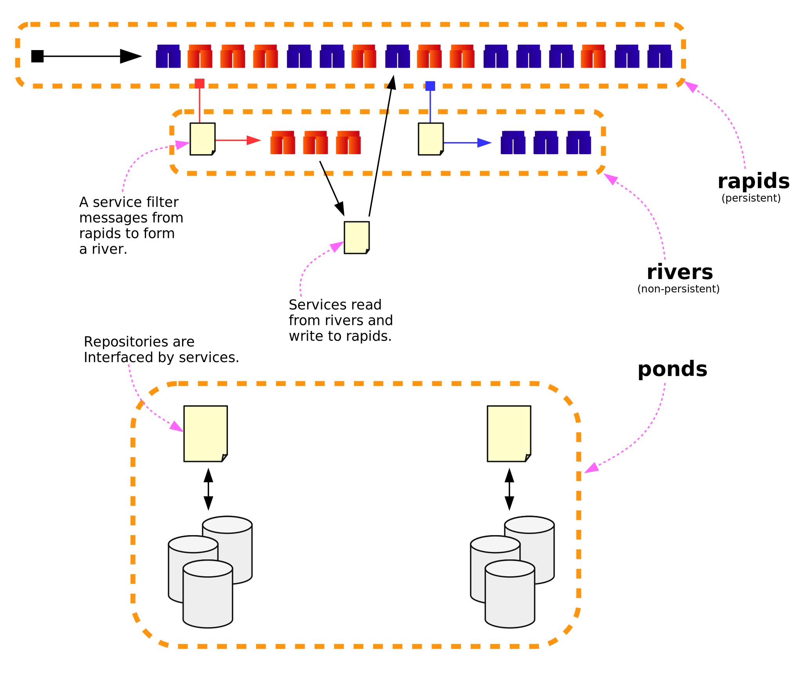

Today I have attended to the Microservices workshop by Fred George in GOTO 2015. For captain’s diary, here I will try to briefly write down the highlights of the session along with my personal take aways.
He is definitely the right guy for the advocacy of the microservice architectures. He stated that, throughout his entire programming career, he had involved in various software projects where he had chance to employ microservice systems. Further, he had many failures (most of the time not related with the software itself) and some notable achievements that turned into million dollar success stories.
Personally, I found him a little bit biased about microservices – which could very well be due to my inexperience in this field compared to his. That is, he almost approaches every problem from a microservice perspective, which reminds me that everything looks like a nail when you have a hammer in your hand. Nevertheless, this might also be necessiated from the problems he had been thrown at. From what I understood, most of the time he is exposed to teams which already have a significant amount of code base and is asked to break it into reusable and self-contained components, which he eventually molded into yet another microservice architecture.
He has an inclination to put almost every functionality into a microservice which exceeds 100 lines of code! And by microservice, most of the time he refers to a bus architecture. This puzzled me quite a bit. I mean, there are many other ways to build an inter-service communication channel and apperantly he had designed such systems in the past too. But somehow in this workshop he prefered to stick with bus architectures for some reason I could not really understand.
He categorizes a microservice architecture into three layers as follows.

I found this layering approach surprisingly enlightening. Though it still contains some parts that puzzle me, I believe those question marks are mainly project specific components that can be (should be?) completed during the development of the system.
According to his experiences, most of the time the message size and its (de)serialization costs do not rank the top priority in terms of overall system performance. Hence, he had always sticked with JSON and is so far really happy with the outcome. We even had a small discussion about Disruptor and L-MAX. He had told that he had chance to work with some really talented programmers in L-MAX and stated that problems they were tackling over there in finance world is quite some different from the ones addressed in ordinary software industry.
At bol.com, our definition of a microservice can be described in three main components:
server – accessible by REST via a multitude of protocols: JSON, XML, and protobuf. It can either be a J2EE application or a self-contained Docker image.
api – exposes entities for the programming language, which is 99% of the time in Java.
driver – provides Java-friendly function calls to the server using api models. The caller does not need to worry about the messaging format, REST call mechanics, or the protocol version.
Hence, it is not possible to write a 100 LOC microservice here, which makes totally sense in my opinion. On the contrary, Fred George just passes around a JSON object where both ends need to eat their own dog food in order to parse/create messages. Here I found Fred’s approach resembling a prototype for a feasibility examination rather than a final product. Personally, I did not buy his reasoning on this issue.
Let me quote directly from Fred George’s slides:
- self-monitoring services replaces unit tests
- business monitoring replaces acceptance tests
- monitor live system continuously rather than testing
His reasoning for the above points was a microservice composed of 100 LOC should be simple enough to not necessitate any tests at all. Monitoring live system would expose any potential bugs and with rapid deployments you can easily fix it on production. To say the least, I do not agree.
He prefers dynamicly-typed languages to build microservices. I think this also emanetes from the fact that he just passes around a JSON object with no certain schema and language-specific driver implementation. This eventually necessitates him to write his JSON reader/writer for each microservice, where dynamically-typed languages play well. Again, I do not agree. I mean, solving the problem of ad-hoc parsing via a dynamically-typed language, I think, just solves the problem of a prevoiusly given wrong decision: You have neither drivers, nor a contract in the message format.
He also talked about how he believes Clojure is very suitable for microservices and Elixir is also a promising language in the field without giving any actual facts. I mean, why? Why Clojure and why not Groovy? I honestly found it really annoying that he presents his personal taste as facts without providing any actual rationale or context. While I am a big fan of Lisp family of languages and also Erlang/Elixir, I found this part of the presentation totally non-sense.
He also complained about the required free and open source tooling for microservices are not there yet, but it is very close. He stated that
While I totally agree with some points, playing around with buzzwords like NodeJS, Cassandra… I found it amusing. He also added that there is still not a single good book on microservices. Nope! He did not accept service-oriented architecture books in the literature as an answer.
So what did we really do in the workshop? We wrote a couple of basic microservices, where we employ a JSON object as a messaging medium and a central RabbitMQ server as the bus. (Fun fact: Wi-Fi sucked as usual. Fred George was experienced enough to bring his own access point.)
Fred George apparently has a vast amount of experience in the field of microservice architectures. I really liked the Rapids, Rivers, and Ponds design of a bus-oriented system. He had also shared some really interesting software development experiences he had in the past, which also provided further clues on potential pitfalls and exceptions. Nevertheless, I found his JSON-passing approach (where each microservice needs to implement its own reader/writer) not solid enough and I did not buy his facts on rationale behind this. Further, relating the microservice architectures with a particular language or tool was absolutely awkward, to say the least.